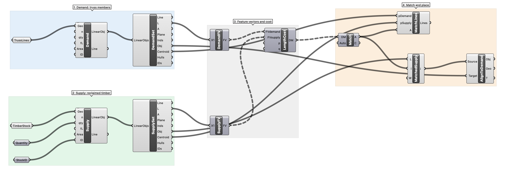

Getting started
Requirements
- Rhino 8 (Service Release 14 or later), Windows or Mac. Use the
Rhino8-net8.0package. - Rhino 7: v0.5.x is the last release line with Rhino 7 support (
Rhino7-net48package), and its changes have not been tested in Rhino 7. Later versions require Rhino 8 or newer.
Installation
- Download the latest
.zipfrom the releases page. Food4Rhino has the major releases; bug-fix releases are only on GitHub. - In Grasshopper, open the components folder: File > Special Folders > Components Folder.
- Windows only: right-click the downloaded
.zip, choose Properties, and check Unblock. - Extract the contents of the
.zipinto the components folder. Keep the.ghaand the.dllfiles together. - Restart Rhino and Grasshopper. The components appear in the DigitalCircularityToolkit tab.
Your first match
The quickest way to see the whole chain is the first example, which matches the members of a truss to a stock of reclaimed timber.
- Download
01_linear_truss.ghand open it in Grasshopper. The geometry (truss lines and timber pieces) is stored in the file. - Follow the four groups from left to right:
- 1 Demand: the truss lines become
LinearObjects and aLinearSet. - 2 Supply: the timber Breps become
LinearObjects with aQuantityand anID, expanded by a secondLinearSet. - 3 Feature vectors and cost: each piece is described by its effective length (
FeatureVector), andAsymmEuclideanDistancepenalizes timber that is too short. - 4 Match and place:
Matchassigns one timber piece to every truss member,MatchLinesdraws the assignment, andAlignToObjectmoves each matched piece onto its member.
- 1 Demand: the truss lines become
- Preview the
MatchLinesandAlignToDemandoutputs in the Rhino viewport.

Linear members from stock explains each step and the choices behind it.
Units
DCT does not convert units. Lengths, areas and costs are in the units of the Rhino document. Cost matrices are rounded up to whole numbers, so the scale of the feature values matters; see Feature vectors and cost matrices.
Getting help
Ask questions and report bugs on GitHub issues. Each component's runtime messages (the orange and red balloons on the canvas) are listed in the Component reference.